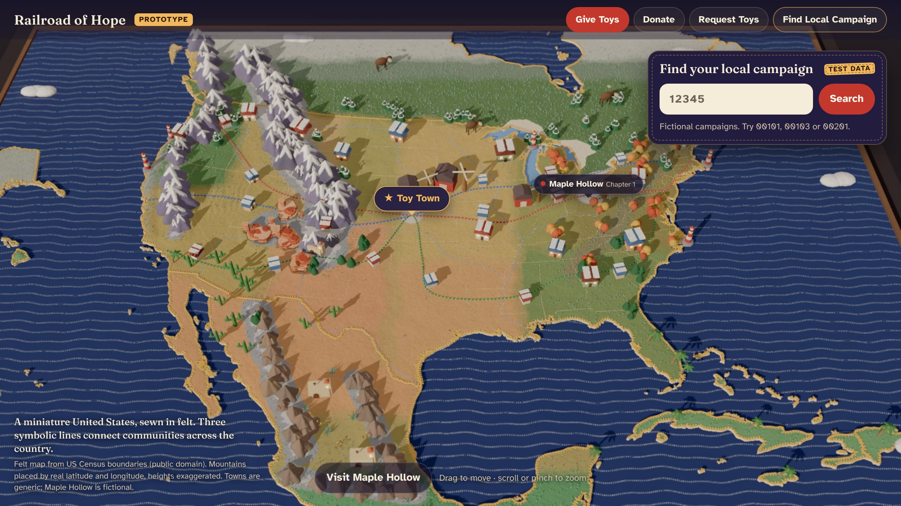
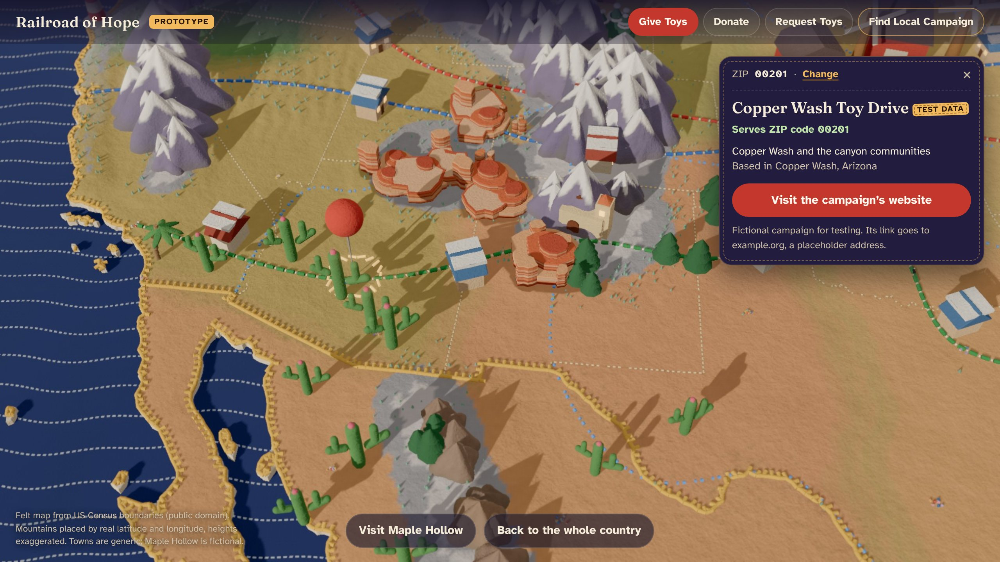
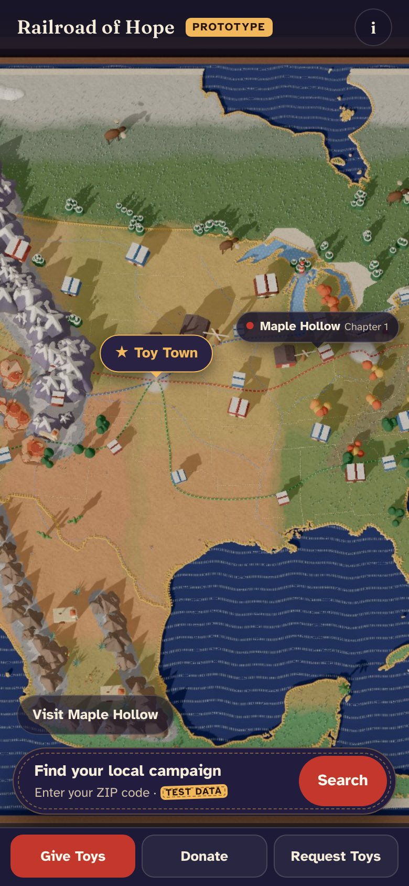
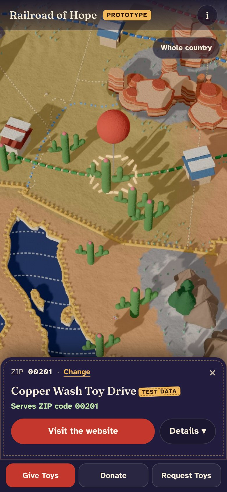
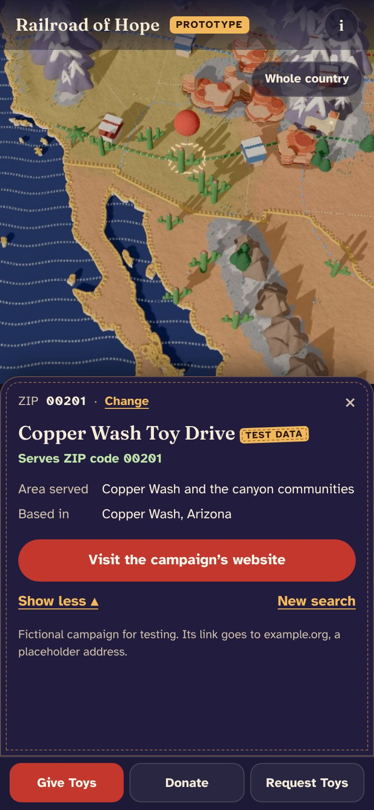
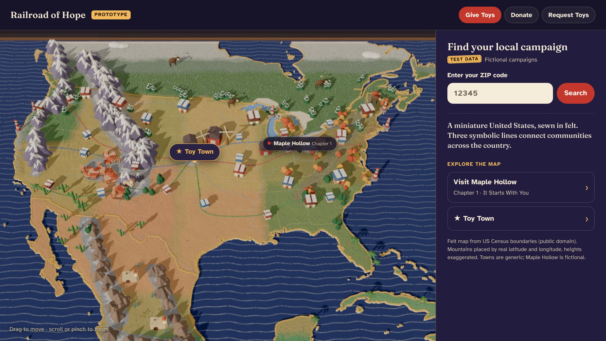
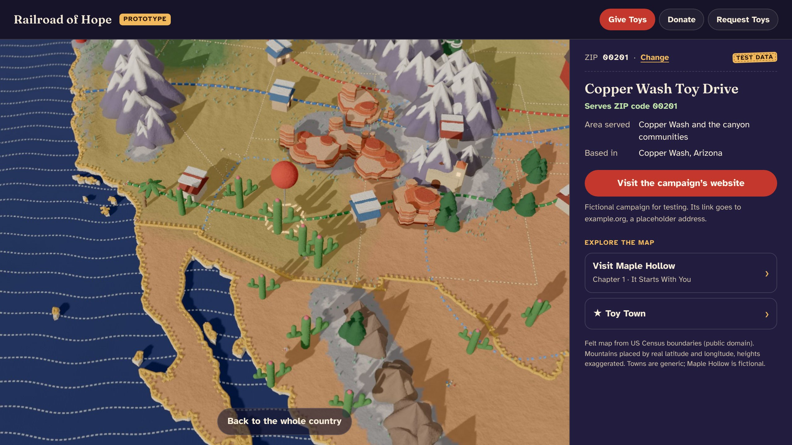
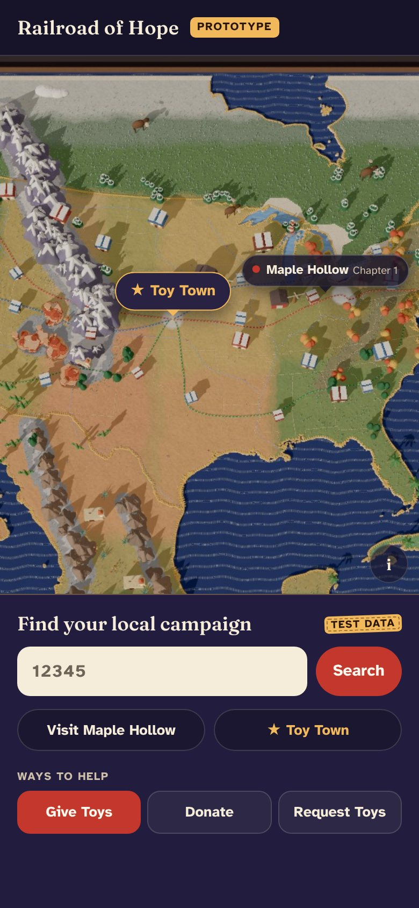
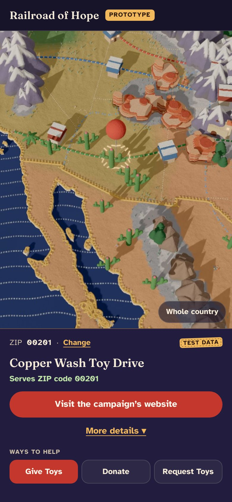
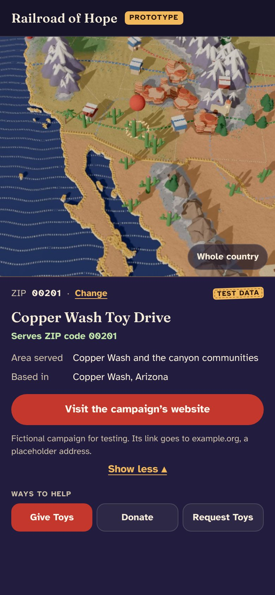

<title>Finder Layout Directions</title>
<meta name="claude:viewport-fit-sides" content="cover">
<link rel="preconnect" href="https://fonts.googleapis.com">
<link rel="stylesheet" href="https://fonts.googleapis.com/css2?family=Fraunces:opsz,wght@9..144,500;9..144,600&family=Atkinson+Hyperlegible:wght@400;700&display=swap">
<style>
  /* Layout: one reading column for the words, wide rows for the screens; the prototype's own night felt look, dark only by choice */
  :root {
    --bg: #17142a; --panel: #221c3e; --ink: #f6ecda; --muted: #cdbfa9; --line: rgba(246, 236, 218, 0.16);
    --gold: #f2b85c; --holly: #d8473a;
    --display: "Fraunces", Georgia, "Times New Roman", serif; --body: "Atkinson Hyperlegible", system-ui, -apple-system, "Segoe UI", sans-serif;
    color-scheme: dark;
  }
  body { background: var(--bg); color: var(--ink); font: 400 16px/1.6 var(--body); padding-left: max(16px, env(safe-area-inset-left, 0px)); padding-right: max(16px, env(safe-area-inset-right, 0px)); padding-block: 40px 64px; }
  main { max-width: 1240px; margin: 0 auto; display: grid; gap: 56px; }
  .prose { max-width: 68ch; }
  h1, h2, h3 { font-family: var(--display); font-weight: 600; text-wrap: balance; margin: 0; }
  h1 { font-size: clamp(30px, 4.4vw, 46px); line-height: 1.08; }
  h2 { font-size: clamp(24px, 3vw, 32px); line-height: 1.15; }
  h3 { font-size: 19px; line-height: 1.3; }
  p { margin: 0; }
  .eyebrow { font: 700 12px/1 var(--body); letter-spacing: 0.1em; text-transform: uppercase; color: var(--gold); margin-bottom: 12px; }
  .lede { color: var(--muted); font-size: 17px; margin-top: 14px; }
  .label { display: inline-block; font: 700 10.5px/1 var(--body); letter-spacing: 0.08em; text-transform: uppercase; color: #2a1606; background: var(--gold); padding: 4px 7px; border-radius: 4px; rotate: -2deg; outline: 1px dashed rgba(42, 22, 6, 0.45); outline-offset: -3px; }
  section { display: grid; gap: 22px; }
  .head { display: grid; gap: 10px; max-width: 72ch; }
  ul { margin: 0; padding-left: 1.2em; display: grid; gap: 6px; }
  li::marker { color: var(--gold); }
  .shots { display: grid; gap: 18px; }
  .row-desk { display: grid; grid-template-columns: repeat(2, minmax(0, 1fr)); gap: 18px; }
  .row-phone { display: grid; grid-template-columns: repeat(3, minmax(0, 1fr)); gap: 18px; max-width: 900px; }
  figure { margin: 0; display: grid; gap: 8px; min-width: 0; }
  figure img { width: 100%; height: auto; display: block; border-radius: 10px; border: 1px solid var(--line); background: #0f0d1d; }
  figcaption { font-size: 13.5px; color: var(--muted); }
  figcaption b { color: var(--ink); font-weight: 700; }
  .rule { border: 0; border-top: 1.5px dashed var(--line); margin: 0; }
  .table-wrap { overflow-x: auto; border: 1px solid var(--line); border-radius: 12px; }
  table { border-collapse: collapse; width: 100%; min-width: 720px; font-size: 14.5px; }
  th, td { text-align: left; vertical-align: top; padding: 12px 16px; border-bottom: 1px solid var(--line); }
  thead th { font: 700 12px/1.2 var(--body); letter-spacing: 0.08em; text-transform: uppercase; color: var(--gold); background: var(--panel); }
  tbody th { font-weight: 700; width: 22%; }
  tbody tr:last-child > * { border-bottom: 0; }
  .edge { color: var(--gold); font-weight: 700; }
  .rec { background: var(--panel); border: 1px solid rgba(242, 184, 92, 0.35); border-radius: 16px; padding: 22px 24px; outline: 1.5px dashed rgba(242, 184, 92, 0.4); outline-offset: -8px; display: grid; gap: 10px; max-width: 80ch; }
  ol { margin: 0; padding-left: 1.3em; display: grid; gap: 8px; }
  @media (max-width: 760px) {
    .row-desk { grid-template-columns: minmax(0, 1fr); }
    .row-phone { grid-template-columns: repeat(2, minmax(0, 1fr)); }
  }
</style>

<main>
  <header class="prose">
    <p class="eyebrow">Railroad of Hope · Phase 1 · design exploration</p>
    <h1>Two layouts for the felt map and the campaign finder</h1>
    <p class="lede">Static concepts drawn over real renders of the current felt map. The map, routes, Toy Town and the working prototype are unchanged. The found campaign is the fictional <b>Copper Wash Toy Drive</b> (ZIP 00201, Arizona), so its pin can be judged away from the Maple Hollow story marker. <span class="label">Test data</span></p>
  </header>

  <section>
    <div class="head">
      <h2>Changes both directions share</h2>
    </div>
    <ul class="prose">
      <li><b>The map caption moves off the map.</b> "A miniature United States, sewn in felt…" no longer sits over the landscape and labels. It goes to a quiet corner (A) or the side panel (B).</li>
      <li><b>Toy Town leads, Maple Hollow follows.</b> Toy Town keeps its gold star label as the hub. Maple Hollow becomes a smaller dark label marked "Chapter 1", so the two no longer compete.</li>
      <li><b>The search becomes the result.</b> After a search the ZIP field is replaced by "ZIP 00201 · Change", so the input is never shown twice.</li>
      <li><b>Three help buttons on phones, not four.</b> "Find Local Campaign" is the finder itself, always on screen, so the bar keeps Give Toys, Donate and Request Toys on a single row.</li>
    </ul>
  </section>

  <hr class="rule">

  <section>
    <div class="head">
      <p class="eyebrow">Direction A</p>
      <h2>Map-first</h2>
      <p class="muted">The map fills the screen. The finder is a small card on desktop and a slim search pill on phones; after a search it turns into a short result. Details open only when asked for.</p>
    </div>
    <div class="shots">
      <div class="row-desk">
        <figure><figcaption><b>Desktop · landing.</b> Compact search card; the whole country is visible.</figcaption></figure>
        <figure><figcaption><b>Desktop · campaign found.</b> The card replaces the search; Arizona is framed in the open map.</figcaption></figure>
      </div>
      <div class="row-phone">
        <figure><figcaption><b>Phone · landing.</b> Map full height; search pill above a slim help bar.</figcaption></figure>
        <figure><figcaption><b>Phone · found.</b> A short sheet with the website one tap away; the pin above.</figcaption></figure>
        <figure><figcaption><b>Phone · details.</b> The sheet grows; the map re-frames above it.</figcaption></figure>
      </div>
    </div>
  </section>

  <hr class="rule">

  <section>
    <div class="head">
      <p class="eyebrow">Direction B</p>
      <h2>Integrated finder</h2>
      <p class="muted">The map is a framed region of the page. On desktop a panel docks beside it; on phones it docks below. The panel holds the finder, the story entry points and the map's description. Nothing floats over the map.</p>
    </div>
    <div class="shots">
      <div class="row-desk">
        <figure><figcaption><b>Desktop · landing.</b> The docked panel: finder, description, then Maple Hollow and Toy Town.</figcaption></figure>
        <figure><figcaption><b>Desktop · campaign found.</b> The result takes the finder's place in the panel.</figcaption></figure>
      </div>
      <div class="row-phone">
        <figure><figcaption><b>Phone · landing.</b> Map above, panel below; no fixed bottom bar.</figcaption></figure>
        <figure><figcaption><b>Phone · found.</b> The map region shrinks a little for the result.</figcaption></figure>
        <figure><figcaption><b>Phone · details.</b> The map becomes a strip; the details get the room.</figcaption></figure>
      </div>
    </div>
  </section>

  <hr class="rule">

  <section>
    <div class="head">
      <h2>How they trade off</h2>
      <p class="muted">Both keep every essential action on screen and work the same with the 3D map off.</p>
    </div>
    <div class="table-wrap">
      <table>
        <thead><tr><th scope="col"></th><th scope="col">A · Map-first</th><th scope="col">B · Integrated finder</th></tr></thead>
        <tbody>
          <tr><th scope="row">Finding a campaign</th><td>One field, then the result. The website button stays one tap away even on the short phone sheet.</td><td><span class="edge">Slightly faster to read.</span> The result and its details sit in a stable panel that never covers the map.</td></tr>
          <tr><th scope="row">The map as the centrepiece</th><td><span class="edge">Strongest.</span> The map fills the screen; the interface is small and sits on top of it.</td><td>The map is a region, about half the phone screen and three-quarters of the desktop. It feels more like a page with a map than a world.</td></tr>
          <tr><th scope="row">Seeing the campaign on the map</th><td>The camera frames the pin in whatever space the card or sheet leaves. When the phone details are open, that space is small.</td><td><span class="edge">Always visible.</span> The pin sits in its own map region, never under a panel.</td></tr>
          <tr><th scope="row">Is the search easy to find?</th><td>Visible on every screen, as a card or pill. It's smaller and reads as part of the map.</td><td><span class="edge">Very clear.</span> A labelled panel says what the page is for.</td></tr>
          <tr><th scope="row">Phone navigation</th><td>A 56 px bar of three buttons; the search pill above it.</td><td>No fixed bar: the three buttons are part of the panel. That frees the screen edge, but the buttons scroll with the panel once details are open.</td></tr>
          <tr><th scope="row">Story entry points</th><td>The map's own labels plus "Visit Maple Hollow"; quiet, discovered on the map.</td><td><span class="edge">Explicit.</span> "Explore the map" lists Maple Hollow and Toy Town in the panel.</td></tr>
          <tr><th scope="row">Accessibility</th><td>Overlays need careful focus order and must never cover content keyboard users need.</td><td><span class="edge">Simpler.</span> The page reads in plain document order: map, finder, actions.</td></tr>
          <tr><th scope="row">Effort and risk</th><td><span class="edge">Smaller change.</span> It's close to today's layout: restyle the finder and add the phone sheet.</td><td>A larger layout change: the map canvas gets its own region, which changes sizing on every screen.</td></tr>
        </tbody>
      </table>
    </div>
  </section>

  <section>
    <div class="rec">
      <h3>My recommendation: Direction A, map-first</h3>
      <p>It does the most for your main concern, the map as the centrepiece, and it's the smaller and safer change from what works today. The search stays visible on every screen and the website stays one tap away. The cost is that the phone details sheet leaves only a band of map above it. If keeping the pin visible with details open matters more than immersion, B is the better choice on phones.</p>
    </div>
  </section>

  <section class="prose">
    <h2>Questions before choosing</h2>
    <ol>
      <li>On phones, is a map-only screen with a search pill (A) clear enough that people know they can find their campaign, or do you want the labelled panel (B)?</li>
      <li>Should Maple Hollow and Toy Town also appear as explicit links outside the map, as in B's "Explore the map", or stay as map labels only?</li>
      <li>Is "Chapter 1" the right quiet label for Maple Hollow, or should it read differently?</li>
      <li>Would you combine them: A on desktop, B's docked panel on phones?</li>
    </ol>
  </section>
</main>
